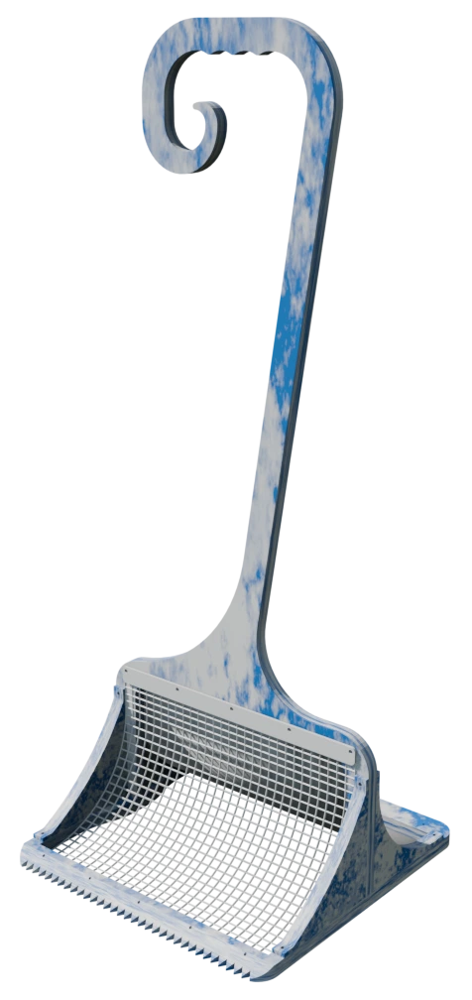
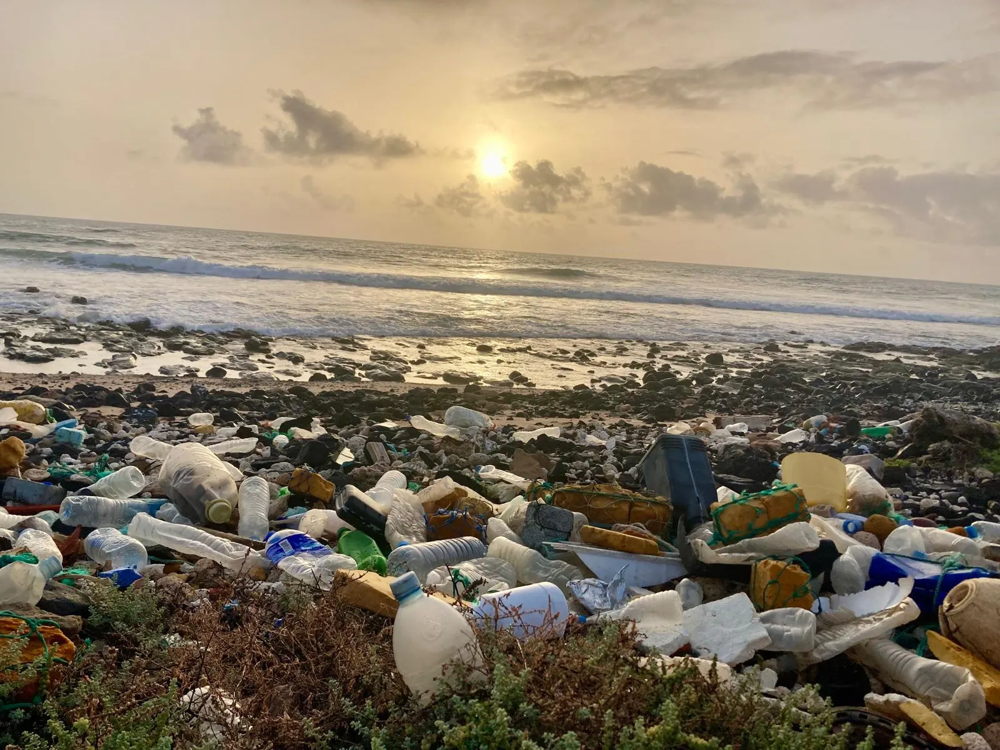
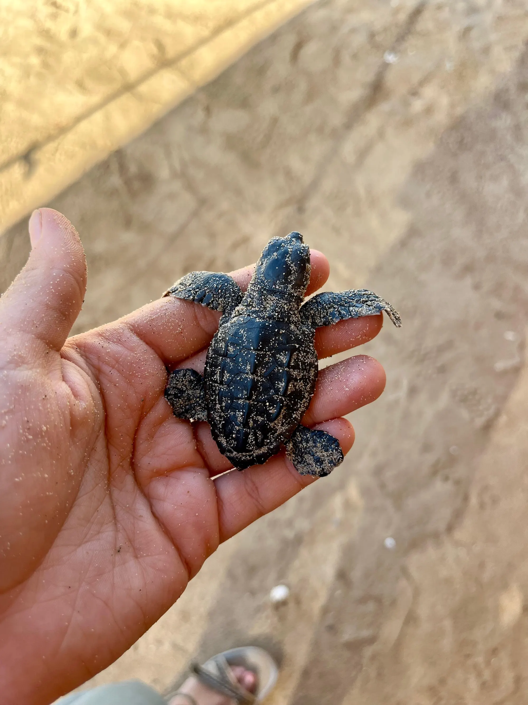
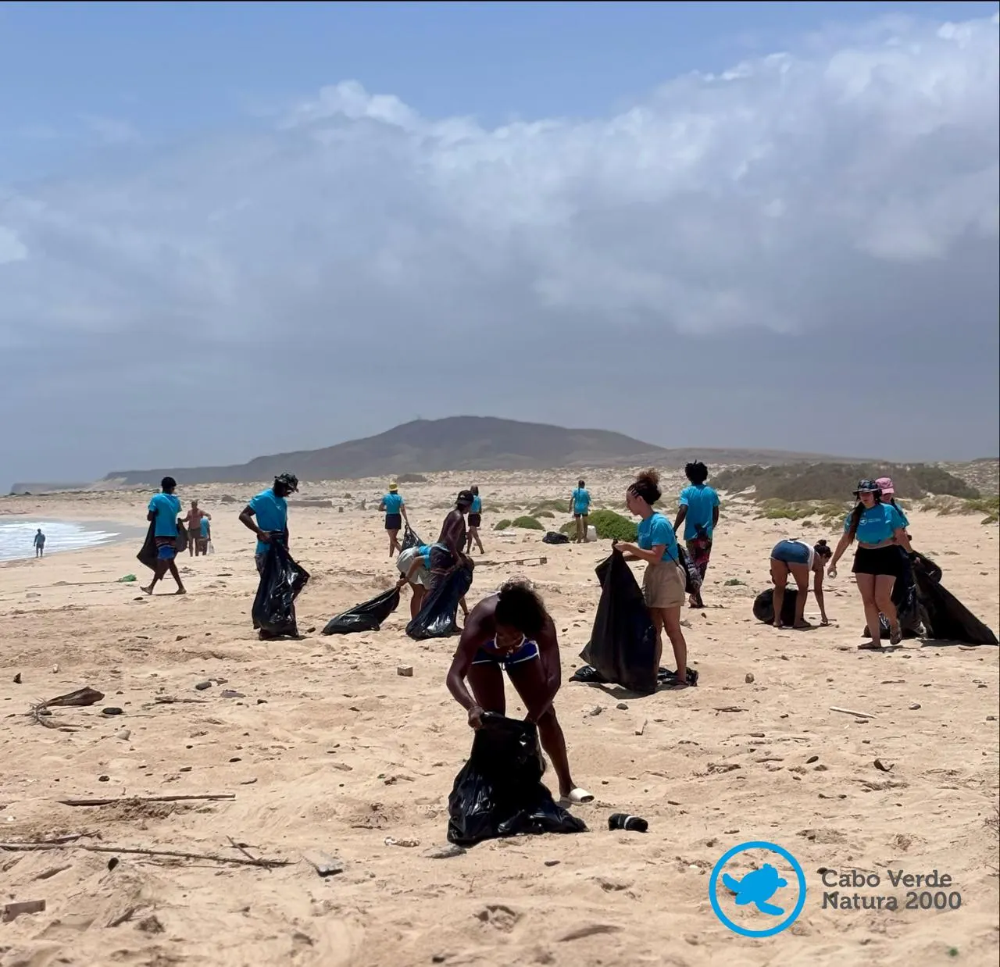
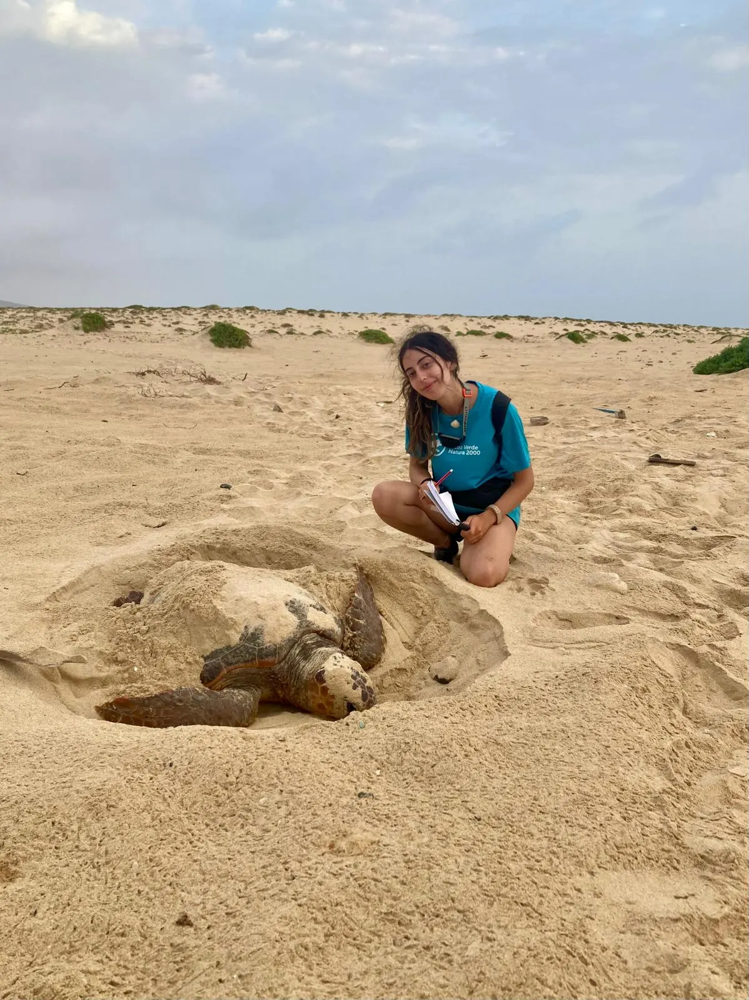
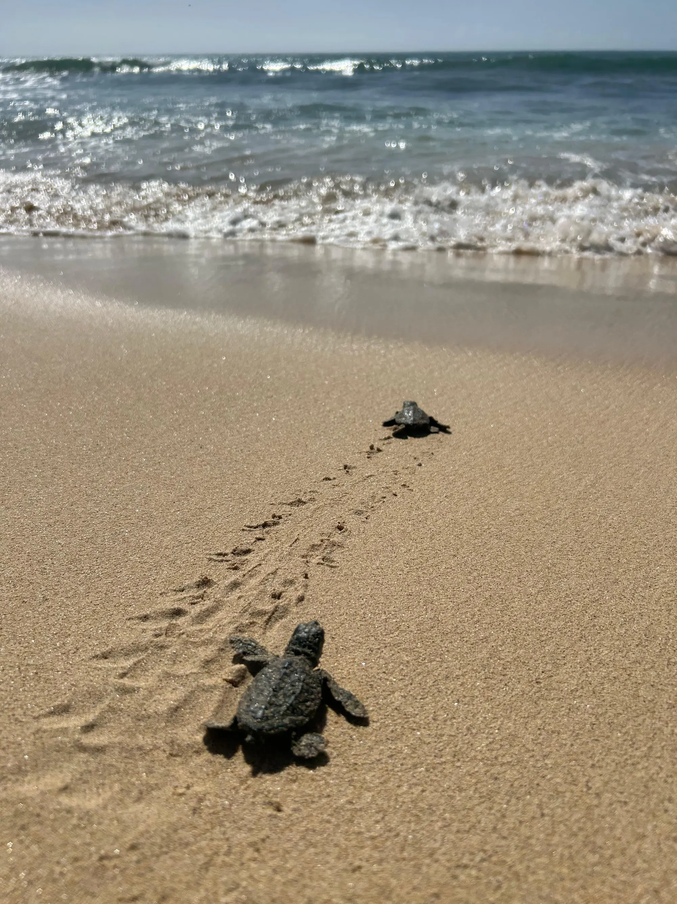

Plástico recuperado
Utilizado en la estructura del sistema a partir de residuos recogidos en las propias playas.
Donde la vida anida
Una nueva forma de cuidar la orilla.
Herramienta manual para la recogida selectiva de residuos en entornos costeros sensibles.
Conocer N’Orla

01 — La orilla
La orilla es un espacio de encuentro. Entre la tierra y el mar, entre los residuos y la vida.
N’Orla nace para intervenir en este límite de forma selectiva, ligera y respetuosa, especialmente en aquellas playas donde la conservación del ecosistema debe estar por encima de la rapidez de la limpieza.
03 — Diseñada para no invadir
A diferencia de los sistemas mecanizados de limpieza, N’Orla está pensada para actuar en espacios donde la intervención debe ser mínima. Su funcionamiento manual permite:

04 — Del residuo al recurso
N’Orla plantea una lógica de economía circular: los residuos recogidos se convierten en materia prima para fabricar nuevos componentes de la propia herramienta.
Recogertransformarvolver a utilizar.
Donde todo empieza.
Lo que el mar devuelve.
Selectiva, manual, sin alterar la arena.
El plástico recuperado se convierte en materia prima.
Nuevos componentes para la propia herramienta.
Y vuelta a la playa.
Aquello que antes era parte del problema puede convertirse en parte de la solución.
05 — Materiales
N’Orla busca reducir la incorporación de materiales nuevos y aprovechar aquellos que ya existen en el entorno.
Utilizado en la estructura del sistema a partir de residuos recogidos en las propias playas.
Material natural empleado en el sistema de filtrado por sus propiedades de retención y su carácter renovable.

06 — Para quién
Personas y organizaciones que participan activamente en la conservación de los entornos costeros.
Para jornadas de limpieza y conservación.
Para intervenciones en espacios naturales sensibles.
Como herramienta complementaria donde la maquinaria no resulta adecuada.
Un sistema sencillo y accesible para cuidar su entorno.

07 — El origen
N’Orla parte de una problemática observada en las costas de Cabo Verde, donde la acumulación de residuos afecta especialmente a zonas intermareales y playas de anidación.
La presencia de residuos puede convertirse en un obstáculo para la fauna marina y alterar espacios destinados a la reproducción.
De esta investigación nace una pregunta:
¿Cómo podemos limpiar la costa sin dejar de protegerla?
N’Orla es nuestra respuesta.
08 — La identidad
Donde la vida anida.
El nombre nace de la expresión “na orla”: la orilla, ese espacio de transición donde se encuentran el agua, la tierra y la vida.
El símbolo fusiona una huella humana con la silueta de una tortuga: nuestra acción y nuestra responsabilidad frente al entorno que queremos proteger.

Donde la vida anida.